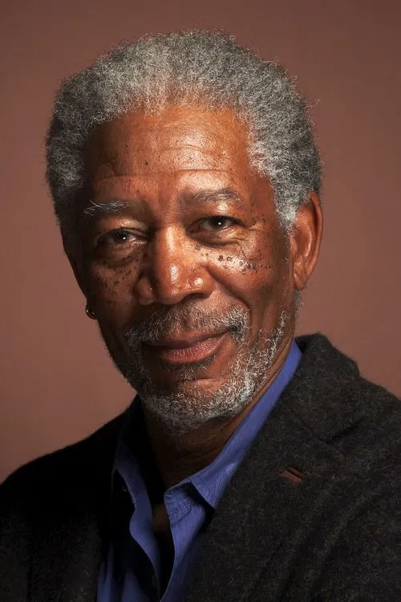

In The Shawshank Redemption, Morgan Freeman plays Ellis Boyd “Red” Redding, one of the most respected prisoners at Shawshank State Penitentiary. Red is known as the man who can “get things,” meaning he can obtain almost any item from outside the prison. Because of his long time in prison and his calm personality, many inmates trust and respect him.
Red becomes close friends with Andy Dufresne, played by Tim Robbins. At first, Red is skeptical about Andy’s hopeful attitude, because years in prison have made him believe that hope can be dangerous. However, as their friendship grows, Andy’s optimism begins to influence Red’s way of thinking.
Morgan Freeman’s narration throughout the film is one of its most memorable elements. His calm, deep voice helps guide the audience through the story and gives emotional depth to the events happening in the prison. Through his performance, Freeman shows Red’s transformation from a man who has lost hope to someone who finally believes in freedom and a better future. His role adds warmth, wisdom, and humanity to the story.
Morgan Freeman was born on June 1, 1937, in Memphis, Tennessee, in the United States. He developed an interest in acting at a young age and later studied theater. Before becoming a major film star, Freeman spent many years acting in theater productions and television shows, slowly building his reputation as a talented and powerful performer.
He became widely known in Hollywood during the late 1980s and 1990s because of his strong screen presence, distinctive voice, and ability to portray thoughtful and wise characters. Over the years, he has played many different roles in drama, action, and historical films, becoming one of the most respected actors in the film industry.
During his long career, Morgan Freeman has starred in many successful films, including:
Morgan Freeman has received many awards and honors throughout his career. He won the Academy Award for Best Supporting Actor for his performance in Million Dollar Baby. His role as Red in The Shawshank Redemption was also highly praised and earned him an Academy Award nomination for Best Actor.
Tday, Morgan Freeman is considered one of the greatest actors in modern cinema. His powerful performances, distinctive voice, and memorable characters have made him a legendary figure in the film industry.